Due: Friday, December 3, 2021, 11.59pm on LMS.
Penalty for late homeworks: 25% for each day or part of a day.
The first three questions concern the following linear program
has dual problem
-
1.
- Let r > 0 and μ = 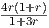. Show that x(r) := (4r,1 + r,2 + 2r) solves the barrier problem
 | (3) |
for any r > 0. (Hint: this is equivalent to showing that x(r) is on the central path. You need to find
dual feasible (y(r),s(r)) so that (x(r),y(r),s(r)) satisfy the central path conditions.) (Lecture
25)
-
2.
- Find x := limr→0x(r). Use duality to prove that this limit point x is optimal for (1). (Lecture
25)
-
3.
- Show that x is not a basic feasible solution for (1). How can we have an optimal solution to the
standard form problem (1) that is not a basic feasible solution? (Lecture 25)
-
4.
- Knapsack Gomory: Consider the knapsack problem
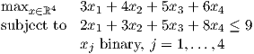
Valid constraints for the LP relaxation include
The point x = (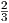,,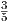,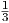)T is feasible in the LP relaxation of the knapsack problem, and it also
satisfies constraints (4)–(7). Find nonnegative multipliers t1,t2,t3,t4 for the constraints (4)–(7) and
add them together to give a constraint ∑
j=14ajxj ≤ b, and then round down each aj and b to give a
valid constraint ∑
j=14⌊aj⌋xj ≤⌊b⌋ for the knapsack problem which is violated by x. (Hint: try to
choose t1,t2,t3,t4 so that each component aj is integral, while b is not integral.) (Lecture
23)
In addition, read Sections 1.8, 21.1 and 7.8 from the text.
You can consult with other students and you can use online resources, but you CANNOT
submit the questions to any online answering service, including Chegg. Solving the homework
problems (and other problems from the text) will improve your understanding of the material. It
may be possible to find the solutions online or elsewhere: please do not use these solutions.
Working out the problems yourself will greatly improve your understanding of the material and
help you on the exams. You can ask questions on slack, in addition to using office hours or
email.
Solutions
-
1.
- We must have xi(r)si(r) = μ(r) for i = 1,2,3. This implies si(r) = μ(r)∕xi(r) for i = 1,2,3. We
get:
-
(a)
- s1 = 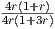 = 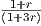, which implies y = s1 = 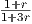.
-
(b)
- s2 = 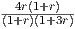 = 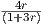, which implies y = 1 -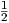s2 = 1 -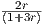 = 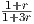.
-
(c)
- s3 = 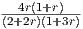 = 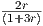, which implies y = 1 - s3 = 1 -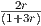 = 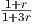.
Since all three components lead to the same value y = 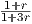, we have a point that satisfies the
central path conditions, so x(r) solves the barrier problem.
-
2.
- x = (0,1,2), which has value 4.
We also have a dual feasible solution y = 1 with dual value 4. Since the primal and dual values
agree, we are optimal.
-
3.
- Since problem (1) only has one equality constraint, any basic feasible solution will have at
most one positive component. The point x has 2 positive components, so it cannot be a
BFS.
Problem (1) has multiple optimal solutions. The limit point x is in the interior of the optimal
face.
-
4.
- There are many possible choices, any of which is an acceptable solution:
- t =
 (2,1,1,1)T :
(2,1,1,1)T :
Adding together (4)–(7) with these multipliers gives
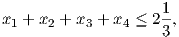
and rounding down gives the valid constraint for the knapsack problem that cuts off x
of:
- t = (2,1,1,4)T :
Adding together (4)–(7) with these multipliers gives
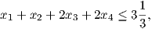
and rounding down gives the valid constraint for the knapsack problem that cuts off x
of:
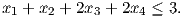
Using t = 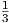(2,1,4,1)T and t = 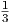(2,4,1,1)T lead to
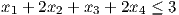
and
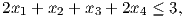
respectively. Note that these inequalities are implied by (8) with one of (5)–(7).
- t = 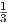(1,2,2,2)T :
Adding together (4)–(7) with these multipliers gives
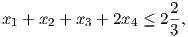
and rounding down gives the valid constraint for the knapsack problem that cuts off x
of:
Note that (8) is implied by (9), so (9) is the strongest inequality presented here.